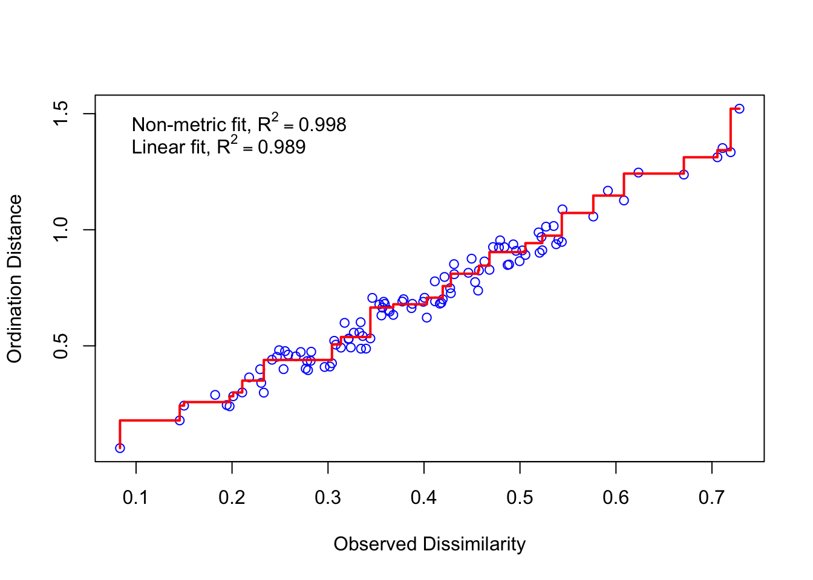

To characterize the foraging ecology of the different species of herbivorous fishes, we characterized in detail individual bites by each species at three sites in the Florida Keys (Conch, French, Molasses reefs) during the Boreal summers of 2014 and 2016.
leaflet() %>%
setView(lat = 25.2, lng = -81.676177, zoom = 8) %>%
addTiles() %>%
addMarkers(lat = 25.00138889, lng = -80.41527778, label = "Pickles Reef")Florida Keys & Pickles Reef
At each site, we haphazardly selected focal fish over a wide range of sizes and then randomly selected a single bite by each individual to describe (see Supplementary Table 2 for sample sizes). For each bite, we identified the food item(s) targeted as well as characteristics of the substrate (e.g., hard bottom vs. other common substrates such as sponges, gorgonians, etc.) at the precise location of the bite. For hard substrates, we recorded whether a bite was on a convex, concave, or flat surface, and whether that surface was oriented horizontally (< 45 degrees) or vertically (> 45 degrees). In addition, we framed each bite within a 5 x 5 cm micro-quadrat and measured the depth of the sediment and height of the algae at several points to determine the average sediment depth and algal height within the vicinity of the bite. We then manually removed sediments and determined whether the fish left a distinct grazing scar (i.e., where calcium carbonate had been removed from the reef framework in addition to epilithic algae).
To visualize the multivariate patterns of herbivory we used non-metric multidimensional scaling (NMDS) as implemented via the metaMDS function in the vegan package. For each species of herbivorous fish at each site we calculated the proportion of bites focused on each prey item (‘prey variables’) as well as the proportion of bites targeting substrates with different characteristics (e.g., convex vs. concave vs. flat). We also calculated the proportion of bites resulting in a grazing scar. For bites on turf assemblages, we calculated the mean turf height and sediment depth directly adjacent to each bite. Prior to analysis, quantitative variables (e.g., sediment depth and turf height) were rescaled to the range of 0 to 1. In addition, quantitative and categorical variables were rescaled such that they would have similar influence to the ‘prey variables’ by dividing each variable by the number of prey categories. Rescaled data were then analysed via NMDS using a Bray-Curtis dissimilarity matrix.
First, we read in and display the table describing the foraging ecology of these fish.
library(ggthemes)
all_traits <- read.csv("DATA/PHYLOSEQ/TABLES/INPUT/Mean_bite_characteristics.txt",
header = TRUE, sep = "\t")
ids <- all_traits[, 1:2]
write.table(all_traits, "DATA/PHYLOSEQ/TABLES/OUTPUT/SUPP/Table_S1.txt",
sep = "\t", row.names = FALSE, quote = FALSE,
col.names = c("Host species", "Site", "Sediment depth (mm)",
"Turf height(mm)", "Prop. mark on substrate",
"Prop. vertical", "Prop. concave", "Prop. convex",
"Articulated red coralline", "CCA/Turf on CCA",
"Dictyota", "Epiphytes", "Gorgonian", "Halimeda",
"Laurencia", "Sponge", "Stypopodium", "Turf"))
datatable(all_traits, rownames = FALSE, width = "100%",
colnames = c("Host species", "Site", "Sediment depth (mm)",
"Turf height(mm)", "Prop. mark on substrate",
"Prop. vertical", "Prop. concave", "Prop. convex",
"Articulated red coralline", "CCA/Turf on CCA",
"Dictyota", "Epiphytes", "Gorgonian", "Halimeda",
"Laurencia", "Sponge", "Stypopodium", "turf"),
caption = htmltools::tags$caption(
style = "caption-side: bottom; text-align: left;",
"Supplementary Table 1: ",
htmltools::em("INSERT DESCRIPTION.")),
extensions = "Buttons",
options = list(columnDefs = list(list(
className = "dt-left", targets = 0)), dom = "Blrtip",
pageLength = 5, lengthMenu = c(5, 10, 15),
buttons = c("csv", "copy"), scrollX = TRUE,
scrollCollapse = TRUE))This table also scrolls horizontally.
Next we conduct the NMDS analysis of the feeding data using standardize the variables so that they have similar weights. Our process is as follows: a) rescale quantitative traits to be in the range 0 to 1 and divide by the number of diet categories to have similar influence as the diet variables; b) rescale all ‘non diet’ traits to have similar influence to the diet traits by dividing by the number of diet categories divided by the number of categories for each substrate characteristic; c) combine these data into a single data frame for NMDS analysis; d) run NMDS analysis
# First
quant_traits_std <- decostand(all_traits[, 3:4], "range") / 10
# Second
Mean_prop_mark_on_substrate_std <- all_traits[, 5] / (10 / 2)
prop_vertical_std <- all_traits[, 6] / (10 / 2)
prop_concave_std <- all_traits[, 7] / (10 / 3)
prop_convex_std <- all_traits[, 8] / (10 / 3)
all_traits_std <- cbind(quant_traits_std,
Mean_prop_mark_on_substrate_std,
prop_vertical_std, prop_concave_std,
prop_convex_std, all_traits[, 9:18])
nmds <- metaMDS(all_traits_std, distance = "bray", k = 3, trymax = 40)Then we convert the NMDS data into a dataframe and inspect the Sheppard plot.
NMDS <- data.frame(NMDS1 = nmds$points[, 1],
NMDS2 = nmds$points[, 2],
MDS3 = nmds$points[, 3])
stressplot(nmds)
Finally, we generate the environmental vectors (correlations of variables with ordination axes).
set.seed(1)
vec_sp <- envfit(nmds$points, all_traits[, 3:18],
perm = 1000, choices = c(1, 2, 3))
spp_scrs <- as.data.frame(scores(vec_sp, display = "vectors"))
spp_scrs$species <- rownames(spp_scrs)
colnames(spp_scrs) <- c("S_MDS1", "S_MDS2", "SMDS3", "species")Now we can plot the results and generate Figure 1 from the manuscript. For all figures generated in this workflow, we coded as much formatting as we could with R and then made minor stylistic changes in Inkscape. Thus, what you see here and throughout, are the raw figures.
#Plot results using ggplot2
#Merge with data that we want to use in plotting
NMDS <- cbind(ids, NMDS)
stuff <- ggplot(NMDS) +
geom_point(mapping = aes(x = NMDS1, y = NMDS2,
shape = Site, colour = Species), size = 4) +
geom_segment(aes(x = 0, y = 0, xend = S_MDS1, yend = S_MDS2),
data = spp_scrs, arrow = arrow(length = unit(0.5, "cm")),
colour = "black", inherit.aes = FALSE) +
geom_text(data = spp_scrs, aes(x = S_MDS1, y = S_MDS2,
label = species), size = 3) +
labs(title = "bray distance on all traits (standardized)",
subtitle = "Stress = 0.04")
#####Now subset just the spp. scrs with the highest correlations
spp_scrs_sub <- spp_scrs[-c(5, 11, 12), ]
#Categorize species scores into different variable types for plotting
variable_type <- as.factor(c(rep("substrate", 5), rep("algae", 8)))
spp_scrs_sub <- cbind(variable_type, spp_scrs_sub)
spp_scrs_substrate <- subset(spp_scrs_sub,
spp_scrs_sub$variable_type == "substrate")
spp_scrs_algae <- subset(spp_scrs_sub,
spp_scrs_sub$variable_type == "algae")fig_1 <- ggplot(NMDS) +
geom_point(mapping = aes(x = NMDS1, y = NMDS2, shape = Site,
colour = Species), size = 4) +
scale_colour_manual(values = samp_pal) +
geom_segment(aes(x = 0, y = 0, xend = S_MDS1, yend = S_MDS2),
data = spp_scrs_substrate,
arrow = arrow(length = unit(0.5, "cm")), color = "red") +
geom_text(data = spp_scrs_substrate, aes(x = S_MDS1, y = S_MDS2,
label = species),
nudge_y = c(-0.025, -0.025, -0.05, 0.05, 0.05)) +
geom_segment(aes(x = 0, y = 0, xend = S_MDS1, yend = S_MDS2),
data = spp_scrs_algae,
arrow = arrow(length = unit(0.5, "cm")), color = "black") +
geom_text(data = spp_scrs_algae, aes(x = S_MDS1, y = S_MDS2,
label = species),
nudge_y = c(-0.025, 0.025, 0.025, 0.025,
0.025, -0.025, -0.05, -0.025)) +
theme_classic(base_size = 15)
fig_1 <- fig_1 + coord_fixed()
fig_1Figure 1: Bray curtis distance on all traits; stress = 0.04
pdf("DATA/PHYLOSEQ/FIGURES/OUTPUT/Figure_1.pdf")
fig_1
invisible(dev.off())